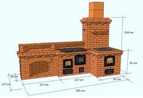

Elektrinės duonkepės | ZEMAKAINA.LT
 Prisijungimas Prisijungimas Prekių krepšelis Krepšelis tuščias. Viso prekių už 0 00 € Peržiūrėti krepšelį Prekių pristatymas Mokėjimo būdai Garantijos ir grąžinimas Kontaktai
Prisijungimas Prisijungimas Prekių krepšelis Krepšelis tuščias. Viso prekių už 0 00 € Peržiūrėti krepšelį Prekių pristatymas Mokėjimo būdai Garantijos ir grąžinimas Kontaktai
8 666 81881
Užsakymai telefonu
9.00-18.00 darbo dienomis
Buičiai, darbams Sodo technika Plovimo įranga Grandininiai pjūklai Žoliapjovės, vejapjovės Trimeriai, krūmapjovės Motoblokai Kultivatoriai Lapų pūstuvai Šakų smulkintuvai Malkų skaldyklės Sniego valytuvai Šlavimo mašinos Gyvatvorių žirklės Siurbliai , hidroforai Aeratoriai, skarifikatoriai Priedai sodo technikai Sodo įrankiai Laistymo įranga Elektriniai įrankiai Medžio, metalo staklės Šlifuokliai Diskiniai pjūklai Frezavimo įrankiai Siaurapjūkliai Smūginiai gręžtuvai Suktuvai-gręžtuvai Perforatoriai Plytelių pjaustyklės Skiedinio maišyklės Betono maišyklės Fenai (orpūtės) Klijų pistoletai Generatoriai Oro kompresoriai Suvirinimo aparatai Elektriniai galąstuvai Šviestuvai, prožektoriai Akumuliatoriai, pakrovėjai Litavimo stotelės Rankiniai įrankiai Įrankių komplektai Replės, žnyplės Žirklės, sekatoriai Kabių pistoletai Kniedikliai Plaktukai Spaustuvai Kopėčios, pastoliai Matavimo prietaisai Nivelyrai Atstumo matuokliai Gulsčiukai Matavimo liniuotės Matlankiai Mikrometrai Slankmačiai Dulkių siurbliai, valytuvai Langų valytuvai Gariniai valytuvai Dulkių siurbliai (šluotos) Dulkių siurbliai (plaunantys) Dulkių siurbliai (cikloniniai) Dulkių siurbliai (robotai) Dulkių siurbliai (su maišeliu) Dulkių siurbliai (vakuuminiai) Siurbliai (pelenų, statyb.) Dulkių siurbliai (rankiniai) Dulkių siurblių priedai Automobilinė įranga Automobiliniai kompresoriai Domkratai, keltuvai Gariniai valytuvai Akumuliatorių pakrovėjai Dulkių siurbliai (automobiliniai) Šaldytuvai (automobiliniai) Įtampos keitikliai Spec. automobiliniai įrankiai Variklinė alyva Auto chemija Šildymo, vėdinimo įranga Oro kondicionieriai (mobilūs) Drėgmės surinkėjai Oro drėkintuvai Aromatizatoriai Oro valytuvai Oro ventiliatoriai Oro šildytuvai Bio-židiniai Orų stotelės Smulki buitinė technika Siuvimo mašinos Laidynės, lygintuvai Lygintuvai (garų generatoriai) Lyginimo sistemos Drabužių garintuvai Manekenai siuvimui Pūkų surinktuvai Gyvūnų prekės Kačių draskyklės Gyvūnų kirpimo mašinėlės Dirbtiniai augalai Dirbtiniai augalai (be žiedų) Dirbtiniai augalai (žydintys) Virtuvei, namams Smulki virtuvės technika Sulčiaspaudės Trintuvai, blenderiai Kokteilinės, plaktuvai Virtuviniai kombainai Virduliai (elektriniai) Mėsmalės Duonkepės Gruzdintuvės Sumuštinių keptuvės Keptuvai (blynų, vaflių) Mini kaitlentės, viryklės Griliai, keptuvai Konvekcinės krosnelės Mikrobangų krosnelės Smulkūs virtuvės prietaisai Svarstyklės (virtuvinės) Vakuumavimo įranga Ledų gaminimo aparatai Spragėsių aparatai Cukraus vatos aparatai Džiovintuvai (vaisių) Skrudintuvai Mėsos pjaustyklės Peilių galąstuvai Daržovių pjaustyklės Prieskonių malūnėliai Kiaušinių virtuvai Makaronų gaminimo aparatai Kavos parduotuvė Kavos aparatai (automatiniai) Kavos aparatai (espresso) Kavos aparatai (su filtru) Kavinukai (moka) Kavamalės Pieno putų plaktuvai Kavos aparatų priedai Puodai (elektriniai) Multifunkciniai puodai Slėginiai puodai (elektriniai) Ryžių puodai (elektriniai) Garpuodžiai (elektriniai) WOK puodai (elektriniai) Fondiu puodai (elektriniai) Puodai, keptuvės Keptuvės Puodai, troškintuvai Greitpuodžiai (metaliniai) Kazanai (ketaus) Ketaus indų rinkiniai Fondiu puodai, indai Arbatinukai Stelažai, lentynos Lentynos-stelažai (mediniai) Vyno lentynos (medinės) Dėžės (medinės) Lauko, sodo baldai Pietų baldų komplektai Poilsio baldų komplektai Gultai, šezlongai Kėdės, stalai Sulankstomi baldai Hamakai Lauko baldai - židiniai Kompiuteriai Žaidimų konsolės Kompiuteriai Spausdintuvai Projektoriai Nešiojami kompiuteriai Planšetiniai kompiuteriai Sportui, laisvalaikiui Treniruokliai Inversiniai stalai Steperiai Bėgimo takeliai Treniruokliai (elipsiniai) Treniruokliai (dviračiai) Treniruokliai (spinning) Treniruokliai (vibro) Treniruokliai (irklavimo) Treniruokliai (staklės) Treniruokliai (universalūs) Atsilenkimų suoliukai / treniruokliai Štangų suoliukai Apsauginiai klimėliai Masažinės kėdės Mankštos prekės Šiaurietiško ėjimo lazdos Pasipriešinimo gumos Gimnastikos lankai Mankštos kamuoliai Pakylos (aerobikos) Kilimėliai (mankštos) Prisitraukimų skersiniai Masažiniai volai Šokdynės Sukimosi diskai Balansinės platformos Sporto inventorius Vartai, krepšinio stovai Raketės, kamuoliuokai Sportiniai tinklai Kamuoliai Smiginio (Darts) rinkiniai Šachmatai, šaškės Stalo teniso stalai Bokso inventorius Turizmo reikmenys Šaltkrepšiai Iškylos pledai Bio-tualetai (nešiojami) Kuprinės Metalo detektoriai Žvejybos reikmenys Pripučiamos valtys Valčių varikliai Valčių priedai Ledo grąžtai Žuvies rūkyklos Išmanūs laikrodžiai Išmaniosios apyrankės Riedlentės, riedžiai Riedlentės Long boardai Penny boardai Riedlentės (elektrinės) Paspirtukai, dviračiai Paspirtukai suaugusiems Elektriniai paspirtukai Elektriniai dviračiai Svarmenys Svoriai ant rankų, kojų Pasunkintos liemenės Hantelių rinkiniai Girės, svarsčiai Jėgos maišai Pavėsinės, palapinės Pavėsinės (surenkamos) Baseinai Vandens pramogos Dronai Vaikų priežiūrai Tapymas pagal skaičius Piešimo rinkiniai (16,5x13cm) Piešimo rinkiniai (29,7x21cm) Piešimo rinkiniai (50x40cm) Deimantinė mozaika Wizardi WOOD Wizardi deimantinė mozaika Automobilinės kėdutės Autokėdutės (0 - 13kg vaikams) Autokėdutės (9 - 18kg vaikams) Autokėdutės (15-36kg vaikams) Autokėdutės (22-36kg vaikams) Vežimėliai, rogutės Vežimėliai (sportiniai) Vaikiškos rogutės Dviratukai, paspirtukai Dviratukai (balansiniai) Triratukai (su rankena) Vaikiški keturačiai Paspirtukai (vaikiški) Mašinėlės (paspiriamosios) Augantys baldai Augantys stalai Kėdės vaikams Baldų komplektai Lauko žaidimų įranga Lauko batutai Surenkami baseinai Maniežai, vaikštynės Maniežai kūdikiams Vaikštynės kūdikiams Vidaus žaidimų įranga Kamuoliukų baseinai Kėdutės, supynės Maitinimo kėdutės Supynės, gultukai kūdikiams Vaikų priežiūros prietaisai Svarstyklės (kūdikių) Elektroninės auklės Vaikiškos lovytės Sveikatai, grožiui Masažo stalai Masažo stalai (VIP serija) Masažo stalai (aliuminio) Masažo stalai (mediniai) Masažo stalai (stacionarūs) Masažo stalai (su Memory Foam) Masažo stalų komplektai Pagalvėlės, paaukštinimai Masažo stalų užvalkalai Kosmetologiniai krėslai Vertikalaus masažo kėdės Masažuotojo kėdutės Masažuokliai, šildyklės Masažinės sėdynės Masažuokliai (rankiniai) Masažinės vonelės Elektrinės šildyklės Masažo akmenys Aliejaus šildytuvai Medicinos technika Kraujospūdžio matuokliai Termometrai (elektroniniai) Alergijos terapijos prietaisai Šviesos terapijos lempos Elektrostimuliatoriai Inhaliatoriai Alkotesteriai Įrankių sterilizatoriai Grožio prietaisai Manikiūro, pedikiūro prietaisai Veido odos valymo aparatai Plaukų džiovintuvai Plaukų tiesintuvai Plaukų suktuvai Epiliatoriai Barzdaskutės, barzdakirpės Plaukų kirpimo mašinėlės Kosmetiniai veidrodžiai Fotoepiliatoriai Dantų šepetėliai Higienos prietaisai Išmanūs tualeto dangčiai Nešiojami bio-tualetai TOP AKCIJOSPrekių katalogas
Buičiai, darbams Sodo technika Plovimo įranga Aukšto slėgio plovyklos Plovyklų priedai Grandininiai pjūklai Akumuliatoriniai pjūklai Elektriniai grandininiai pjūklai Benzininiai grandininiai pjūklai Grandinių galandinimo staklės Žoliapjovės, vejapjovės Žoliapjovės (elektrinės) Žoliapjovės (benzininės) Žoliapjovės (mechaninės) Žoliapjovės (akumuliatorinės) Vejos traktoriukai, šienapjovės Trimeriai, krūmapjovės Benzininiai trimeriai Elektriniai trimeriai Akumuliatoriniai trimeriai Motoblokai Kultivatoriai Lapų pūstuvai Šakų smulkintuvai Malkų skaldyklės Sniego valytuvai Šlavimo mašinos Gyvatvorių žirklės Elektrinės gyvatvorių žirklės Akumuliatorinės gyv. žirklės Benzininės gyvatvorių žirklės Aukštapjovės, genėtuvai Siurbliai , hidroforai Aeratoriai, skarifikatoriai Priedai sodo technikai Alyvos, tepalai Skaldylių pleištai Technikos priedai Apsaugos veidui Sodo įrankiai Laistymo įranga Elektriniai įrankiai Medžio, metalo staklės Pjovimo staklės Obliavimo staklės Gręžimo staklės Frezavimo staklės Tekinimo staklės Šlifavimo staklės Darbastaliai Šlifuokliai Kampiniai šlifuokliai Ekscentriniai šlifuokliai Vibraciniai šlifuokliai Sienų ir lubų šlifuokliai Juostiniai šlifuokliai Trikampiai šlifuokliai Diskiniai pjūklai Frezavimo įrankiai Siaurapjūkliai Smūginiai gręžtuvai Suktuvai-gręžtuvai Perforatoriai Plytelių pjaustyklės Skiedinio maišyklės Betono maišyklės Fenai (orpūtės) Klijų pistoletai Generatoriai Oro kompresoriai Vienfaziai kompresoriai Trifaziai kompresoriai Pneumatiniai įrankiai Suvirinimo aparatai Elektriniai galąstuvai Šviestuvai, prožektoriai Akumuliatoriai, pakrovėjai Litavimo stotelės Rankiniai įrankiai Įrankių komplektai Replės, žnyplės Žirklės, sekatoriai Kabių pistoletai Kniedikliai Plaktukai Spaustuvai Kopėčios, pastoliai Matavimo prietaisai Nivelyrai Lazeriniai nivelyrai Optiniai nivelyrai Stovai, štatyvai Atstumo matuokliai Gulsčiukai Matavimo liniuotės Matlankiai Mikrometrai Slankmačiai Dulkių siurbliai, valytuvai Langų valytuvai Gariniai valytuvai Dulkių siurbliai (šluotos) Dulkių siurbliai (plaunantys) Dulkių siurbliai (cikloniniai) Dulkių siurbliai (robotai) Dulkių siurbliai (su maišeliu) Dulkių siurbliai (vakuuminiai) Siurbliai (pelenų, statyb.) Dulkių siurbliai (rankiniai) Dulkių siurblių priedai Automobilinė įranga Automobiliniai kompresoriai Domkratai, keltuvai Gariniai valytuvai Akumuliatorių pakrovėjai Dulkių siurbliai (automobiliniai) Šaldytuvai (automobiliniai) Termoelektriniai šaldytuvai Įtampos keitikliai Spec. automobiliniai įrankiai Variklinė alyva Auto chemija Šildymo, vėdinimo įranga Oro kondicionieriai (mobilūs) Drėgmės surinkėjai Oro drėkintuvai Aromatizatoriai Aromatiniai aliejai, filtrai Oro valytuvai Oro ventiliatoriai Oro šildytuvai Šildytuvai (spinduliniai) Šildytuvai (elektriniai) Šildytuvai (pramoniniai) Bio-židiniai Biokuras (bio-židiniams) Orų stotelės Smulki buitinė technika Siuvimo mašinos Siuvimo mašinos (elektromech.) Siuvimo mašinos (kompiuteriz.) Overlokai Siuvimo mašinų priedai Laidynės, lygintuvai Lygintuvai (garų generatoriai) Lyginimo sistemos Drabužių garintuvai Manekenai siuvimui Pūkų surinktuvai Gyvūnų prekės Kačių draskyklės Gyvūnų kirpimo mašinėlės Dirbtiniai augalai Dirbtiniai augalai (be žiedų) Dirbtiniai augalai (žydintys) Virtuvei, namams Smulki virtuvės technika Sulčiaspaudės Sulčiaspaudės (lėtaeigės) Sulčiaspaudės (išcentrinės) Sulčiaspaudės (citrusinių) Sulčiaspaudės (mechaninės) Trintuvai, blenderiai Kokteilinės, plaktuvai Virtuviniai kombainai Virduliai (elektriniai) Metaliniai virduliai Stikliniai virduliai Keramikiniai virduliai Plastikiniai virduliai Mėsmalės Duonkepės Gruzdintuvės Gruzdintuvės (be aliejaus) Gruzdintuvės (su aliejumi) Sumuštinių keptuvės Keptuvai (blynų, vaflių) Mini kaitlentės, viryklės Griliai, keptuvai Griliai (uždaro kepimo) Griliai (kepimo plokštės) Griliai (rakleto) Griliai (lauko) Grilių aksesuarai Konvekcinės krosnelės Mikrobangų krosnelės Smulkūs virtuvės prietaisai Svarstyklės (virtuvinės) Vakuumavimo įranga Maisto vakuumatoriai Vakuumavimo maišeliai Ledų gaminimo aparatai Spragėsių aparatai Cukraus vatos aparatai Džiovintuvai (vaisių) Skrudintuvai Mėsos pjaustyklės Peilių galąstuvai Daržovių pjaustyklės Pjaustyklės (elektrinės) Pjaustyklės (mechaninės) Prieskonių malūnėliai Kiaušinių virtuvai Makaronų gaminimo aparatai Kavos parduotuvė Kavos aparatai (automatiniai) Kavos aparatai (espresso) Kavos aparatai (su filtru) Kavinukai (moka) Kavamalės Pieno putų plaktuvai Kavos aparatų priedai Puodai (elektriniai) Multifunkciniai puodai Slėginiai puodai (elektriniai) Ryžių puodai (elektriniai) Garpuodžiai (elektriniai) WOK puodai (elektriniai) Fondiu puodai (elektriniai) Puodai, keptuvės Keptuvės Keptuvės (indukcinės) Keptuvės (ketaus) Keptuvės (tefloninės) Keptuvės (akmens masės) Puodai, troškintuvai Puodai (ketaus) Puodai (keramikiniai) Puodai (aliuminio lydinio) Puodai (rinkiniai) Greitpuodžiai (metaliniai) Kazanai (ketaus) Ketaus indų rinkiniai Fondiu puodai, indai Arbatinukai Arbatinukai (ketaus) Arbatinukai (metaliniai) Stelažai, lentynos Lentynos-stelažai (mediniai) Vyno lentynos (medinės) Dėžės (medinės) Lauko, sodo baldai Pietų baldų komplektai Poilsio baldų komplektai Gultai, šezlongai Kėdės, stalai Sulankstomi baldai Hamakai Lauko baldai - židiniai Kompiuteriai Žaidimų konsolės Kompiuteriai Spausdintuvai Projektoriai Nešiojami kompiuteriai Planšetiniai kompiuteriai Sportui, laisvalaikiui Treniruokliai Inversiniai stalai Steperiai Bėgimo takeliai Treniruokliai (elipsiniai) Treniruokliai (dviračiai) Treniruokliai (spinning) Treniruokliai (vibro) Treniruokliai (irklavimo) Treniruokliai (staklės) Treniruokliai (universalūs) Atsilenkimų suoliukai / treniruokliai Štangų suoliukai Apsauginiai klimėliai Masažinės kėdės Mankštos prekės Šiaurietiško ėjimo lazdos Pasipriešinimo gumos Gimnastikos lankai Mankštos kamuoliai Pakylos (aerobikos) Kilimėliai (mankštos) Prisitraukimų skersiniai Masažiniai volai Šokdynės Sukimosi diskai Balansinės platformos Sporto inventorius Vartai, krepšinio stovai Krepšinio stovai Futbolo vartai Raketės, kamuoliuokai Stalo teniso raketės Badmintono raketės Stalo teniso kamuoliukai Badmintono skrajukės Sportiniai tinklai Badmintono tinklai Tinklinio tinklai Futbolo tinklai Stalo teniso tinklai Krepšinio tinkliukai Kamuoliai Krepšinio kamuoliai Futbolo kamuoliai Tinklinio kamuoliai Rankinio kamuoliai Smiginio (Darts) rinkiniai Smiginio taikiniai Smiginio strėlytės Šachmatai, šaškės Stalo teniso stalai Bokso inventorius Bokso maišai Bokso pirštinės / šalmai Vaikiški bokso rinkiniai Turizmo reikmenys Šaltkrepšiai Iškylos pledai Bio-tualetai (nešiojami) Biotualetų priedai Kuprinės Metalo detektoriai Žvejybos reikmenys Pripučiamos valtys Valčių varikliai Valčių priedai Ledo grąžtai Žuvies rūkyklos Išmanūs laikrodžiai Išmaniosios apyrankės Riedlentės, riedžiai Riedlentės Long boardai Penny boardai Riedlentės (elektrinės) Paspirtukai, dviračiai Paspirtukai suaugusiems Elektriniai paspirtukai Elektriniai dviračiai Svarmenys Svoriai ant rankų, kojų Pasunkintos liemenės Hantelių rinkiniai Girės, svarsčiai Jėgos maišai Pavėsinės, palapinės Pavėsinės (surenkamos) Baseinai Vandens pramogos Dronai Vaikų priežiūrai Tapymas pagal skaičius Piešimo rinkiniai (16,5x13cm) Piešimo rinkiniai (29,7x21cm) Piešimo rinkiniai (50x40cm) Deimantinė mozaika Wizardi WOOD Wizardi deimantinė mozaika Automobilinės kėdutės Autokėdutės (0 - 13kg vaikams) Autokėdutės (9 - 18kg vaikams) Autokėdutės (15-36kg vaikams) Autokėdutės (22-36kg vaikams) Vežimėliai, rogutės Vežimėliai (sportiniai) Vaikiškos rogutės Dviratukai, paspirtukai Dviratukai (balansiniai) Triratukai (su rankena) Vaikiški keturačiai Paspirtukai (vaikiški) Mašinėlės (paspiriamosios) Augantys baldai Augantys stalai Kėdės vaikams Baldų komplektai Lauko žaidimų įranga Lauko batutai Surenkami baseinai Maniežai, vaikštynės Maniežai kūdikiams Vaikštynės kūdikiams Vidaus žaidimų įranga Laipiojimo kopetėlės Žaidimų stalai Stalo futbolas Biliardas Stalo ledo ritulys Pokeris Kamuoliukų baseinai Kėdutės, supynės Maitinimo kėdutės Supynės, gultukai kūdikiams Vaikų priežiūros prietaisai Svarstyklės (kūdikių) Elektroninės auklės Vaikiškos lovytės Sveikatai, grožiui Masažo stalai Masažo stalai (VIP serija) Masažo stalai (aliuminio) Masažo stalai (mediniai) Masažo stalai (stacionarūs) Masažo stalai (su Memory Foam) Masažo stalų komplektai Pagalvėlės, paaukštinimai Masažo stalų užvalkalai Kosmetologiniai krėslai Vertikalaus masažo kėdės Masažuotojo kėdutės Masažuokliai, šildyklės Masažinės sėdynės Masažuokliai (rankiniai) Masažinės vonelės Elektrinės šildyklės Masažo akmenys Karšto masažo akmenys Akmenų šildytuvai Aliejaus šildytuvai Medicinos technika Kraujospūdžio matuokliai Termometrai (elektroniniai) Vonios svarstyklės Dantų šepetėliai Alergijos terapijos prietaisai Šviesos terapijos lempos Elektrostimuliatoriai Inhaliatoriai Alkotesteriai Įrankių sterilizatoriai Grožio prietaisai Manikiūro, pedikiūro prietaisai Dantų šepetėliai Veido odos valymo aparatai Plaukų džiovintuvai Plaukų tiesintuvai Plaukų suktuvai Epiliatoriai Barzdaskutės, barzdakirpės Plaukų kirpimo mašinėlės Kosmetiniai veidrodžiai Fotoepiliatoriai Dantų šepetėliai Higienos prietaisai Išmanūs tualeto dangčiai Nešiojami bio-tualetai TOP AKCIJOS Pradžia / Virtuvei, namams / Smulki virtuvės technika / DuonkepėsVirtuvei, namams
Smulki virtuvės technika Sulčiaspaudės Trintuvai, blenderiai Kokteilinės, plaktuvai Virtuviniai kombainai Virduliai (elektriniai) Mėsmalės Duonkepės Gruzdintuvės Sumuštinių keptuvės Keptuvai (blynų, vaflių) Mini kaitlentės, viryklės Griliai, keptuvai Konvekcinės krosnelės Mikrobangų krosnelės Smulkūs virtuvės prietaisai Kavos parduotuvė Puodai (elektriniai) Puodai, keptuvės Stelažai, lentynos Lauko, sodo baldai KompiuteriaiPrekių filtras
Valyti Gamintojas Valyti GUZZANTI Kenwood MAESTRO MORPHY RICHARDS PanasonicElektrinės duonkepės
1 - 8 iš 8 Prekių filtras Išvalyti filtrą -10 % Duonkepė Morphy Richards Home Bake 502000 Kodas: AGDMORWYP0001 Kaina 179 00 € 199 00 € Sutaupykite 20 00 € -17 % Duonkepė Morphy Richards Home Bake Kodas: AGDMORWYP0002 Kaina 129 00 € 155 00 € Sutaupykite 26 00 € Duonkepė MAESTRO MR-751 Kodas: AGDMEOCHL0002 Kaina 90 00 € Duonkepė GUZZANTI GZ-620 Kodas: 5050370005919 Kaina 88 00 € Duonkepė GUZZANTI GZ-635 Kodas: 5050370005926 Kaina 85 00 € Duonkepė PANASONIC SD-ZB2512KXE Kodas: T5025232819959 Kaina 235 00 € Duonkepė MAESTRO MR-750 Kodas: 4820096552964 Kaina 75 00 € -11 % Duonkepė Kenwood BM450 Kodas: AP5011423121406 Kaina 177 00 € 199 00 € Sutaupykite 22 00 €Jei bent kartą užuosite nuostabaus namie keptos duonos kvapą ir paragausite to nepakartojamo skonio, neabejojame, kitokios duonos daugiau nė nenorėsite. O namie kepta duona galite mėgautis visada, tereikia turėti duonkepę! Susigundėte? Rinkitės mūsų el. parduotuvėje ir jau netrukus galėsite maišyti tešlą!
Rinkdamiesi įvertinkite duonkepės galingumą – kuo ji galingesnė, tuo greičiau veiks. Bet drauge ir naudos daugiau elektros energijos. Prietaiso dydis ir svoris reikšmingi, jei duoną kepsite ne tik namuose, bet duonkepę ir transportuosite. O štai duonkepės talpa – labai svarbi. Jei turite didesnę šeimą, tikslinga rinktis talpesnę, kad kepinys būtų didesnis. Jei duonos valgytojų namuose mažiau – puikiu pasirinkimu bus ir nedidelius kepinius kepanti duonkepė. Prioritetą teikite nerūdijančio plieno duonkepėms, jei vertinate patvarumą ir ilgaamžiškumą.
Programų skaičius – jis parodo, kiek ir kokių galimybių naudodamiesi duonkepe Jūs turėsite. Duonkepės gali turėti nuo kelių iki net kelių dešimčių kepimo programų, besiskiriančių tešlos minkymo bei kepimo ypatumais. Neabejotinai rinkdamiesi vertinsite kainą – šis kriterijus svarbus daugeliui. Bet kad ir kokį prietaisą pasirinktumėte, rekomenduojama, kad jame būtų galimybė pasirinkti skrudinimo laipsnį, maišyti skirtingos konsistencijos tešlą (tokioje galėsite maišyti tešlą ne tik duonai, bet ir picai, blynams ir kt.). Daugiau funkcijų turinčia duonkepe galėsite ruošti džemą, kepti keksus, duoną su įdarais, saldžių priedų turinčius kepinius, įvairiausius pyragus ir kt.
Rinkitės First, Guzzanti, Kenwood, Panasonic, Princess, Redmond, Russell Hobbs, Tefal, Tristar duonkepes mūsų el. parduotuvėje. Gamintojus renkamės labai atsakingai ir į asortimentą įtraukiame tik geriausiųjų gaminius. Minėti gamintojai rinkoje pozicionuojami labai gerai, jie vertinami klientų, pelnę daug simpatijų ir pasitikėjimą.
Duonkepės internetu ZemaKaina.lt el. parduotuvėje – išskirtinė proga įsigyti puikią duonkepę ir ilgai mėgautis jos teikiamais privalumais. Jei nusprendėte, kad norite kada panorėję mėgautis šviežia, kvapnia duona, siūlome duonkepę rinktis mūsų el. parduotuvėje. Čia Jūsų laukia kokybiški gaminiai, šaunios akcijos, patogūs apmokėjimo būdai ir spartus pirkinių pristatymas nurodytu adresu. Kai kurias duonkepes pristatome ir į paštomatus – viskas Jūsų patogumui.
Pristatymo sąlygos Apmokėjimo būdai Garantijos ir grąžinimas Garantijos pratęsimas Pirkimas išsimokėtinai TAX FREE El. atliekų surinkimas Naujienlaiškio prenumerata Klientų atsiliepimai Pirkėjo gidas Pirkimo taisyklės Privatumo politika INTERNETINĖ PARDUOTUVĖ | Ta pati kokybė, tik ZEMAKAINA.LT MB Deinama. Kodas: 305036380. PVM mokėtojo kodas: LT100012209812. Pabradės g. 27, LT-45443, Kaunas. Telefonas: +37066681881. Sąskaitos nr.: LT817300010157926238, Swedbank. Banko kodas: 73000, SWIFT: HABALT22. © 2020 MB Deinama. Be MB Deinama sutikimo draudžiama kopijuoti ir platinti svetainėje esančią informaciją. El. parduotuvių kūrimas: evispa.lt